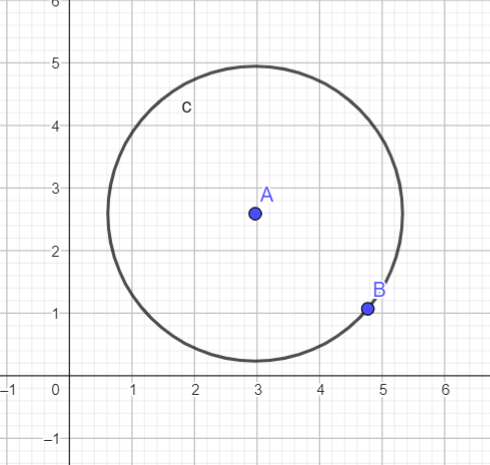
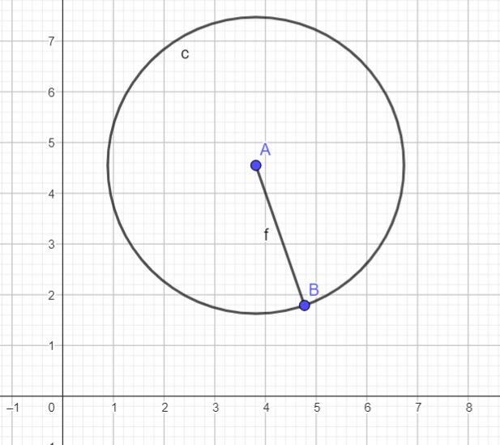
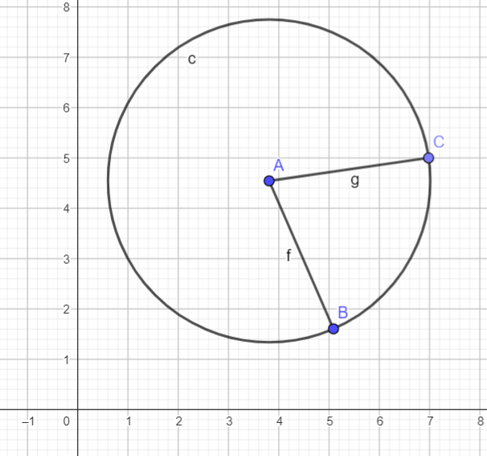

Kör
Meghatározás
A kör a síkban egy adott ponttól egyforma távolságra lévő pontok halmaza. Az ábrán látható kört cvel jelöljük
Tulajdonságok
A kör több tulajdonsággal is rendelkezik, ilyen a sugara, átmérője, kerülete stb. a következőkben ezekben fogunk foglalkozni.
Sugár
A sugár azt a távolságot jelöli, amely a kör középpontja és rajta lévő pontok között tálálható. Az ábrán a c-vel jelölt kör található melynek középpontja A, sugara az f szakasz, mely összeköti az A és B pontokat.
Középpont
A középpont az a pont, amelytől az összes körön lévő pont egyforma távolságra van. Az ábrán látható c körnek az A pont a középpontja.
Átmérő
Az átmérő a sugár meghosszabbítás a kör felületéig, így hossza megeggyezik a sugár hosszának kétszeresével. Az ábrán láthatóm kör középpontja az A átmérője pedig a B és C.
Kerület
A kör kerületének képlete: K=2Rπ. Ahol R a kör sugara, a π pedig az irracionális szám, melynek megközelítő értéke 3,1415
Terület
A kör Területének képlete: T=R2π. Ahol R a kör sugara, a π pedig az irracionális szám, melynek megközelítő értéke 3,1415
Húr
A húr egy olyan szakasz, melynek mindkét végpontja a körön van. Az ábrán látható A középpontú c körnek a B és C pontok által meghatározott szakasz a húrja.
Szögek
A körben megkülönböztetünk középponti szögeket, csúcsszögeket és köríveket.
Osztályozás
Középponti szög
Középponti szögnek nevezzük azt a szöget, amelynek szárai sugarak, tehát csúcsa a középpontban van. Az ábrán látható f és g sugarak határoznak meg egy középponti szöget.
Csúcsszög
A csúcsszög az a szög, amelynek szárai húrok. mértéke egyenlő a szárai közé eső körív mértékének a felével. Az ábrán látható CB és CD egyenesek móhatározzák meg a DCB csúcsszöget.
Körív
A körív az a része a körnek, amelyet két körön lévő pont kiválasztásával kapunk. Az ábrán a B és C pontok meghatározzák a BC körívet.